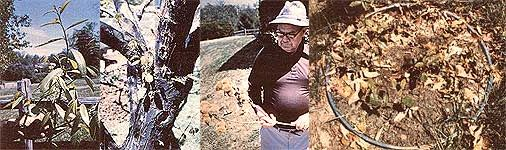

Thanks to one man's single-handed, whole-hearted effort to preserve a tree that is in danger of extinction, perhaps we can all help...
Photos By The Author
Edgar Huffman has spent more than a third of his seven decades pursuing an interest in the American chestnut (Castanets dentata). Before the "blight" all but wiped it from existence back in the 20's and 30's (some of the felled silvery trunks and stumps can still be seen in the woods), this species was the dominant tree in Appalachian forests ...and it was also the main variety to be found around the Huffman home in Harrisonburg, Virginia.
In his younger days Edgar would often sneak a summer afternoon nap under a chestnut tree in the grove on his father's farm in the Shenandoah Valley ...and he recollects gathering bushels of roasting nuts from the shade-producers every autumn.
At that time, tanneries in the valley would buy literally tons of bark from owners of chestnut trees, because such material was the best source of tannin that was available then. Farmers and craftsfolk used the wood, too-for rail fences, siding, tool handles, fine furniture, and hundreds of other items-since the timber was rot-resistant, knot-free, exceedingly strong, and faster-growing than any equivalent wood. And, naturally, the chestnut was a major source of heat in the early part of the century, not only because of its abundance and rapid growth, but also because the logs-when burned as fuel-produced little smoke and had a BTU-per-pound rating comparable to that of black oak.
The nuts were also valuable, of course. For one thing, they provided superior forage for pigs. It used to be common knowledge that one tree could fatten three hogs per year ...and an old Appalachian tale recounts how it took three people to gather chestnuts for human consumption: one to shake the tree, one to distract the porkers with corn, and one to gather the nuts in a hurry before the hogs wised up!
Furthermore, the trees' leaves made excellent bedding for livestock, because their high tannin content repelled insects. And when the animals' stalls were cleaned out, the combined leaves and manure made good compost for the garden (particularly in areas with alkaline soil, since the foliage is rather acidic ). .
BUT FOR THE BLIGHT ...
When one considers the versatility of the American chestnut, then, it should come as no surprise that the blight which swept the nation in the 1920's and 30's caused great economic losses. The fungus eats through the tree's bark and kills it at ground level. Chestnut roots generally survive, however, and will often produce new shoots ...but they, too, nearly always succumb to the disease.
It's believed that the blight was introduced into this country at the turn of the century probably carried by imported species which were themselves resistant -and spread rapidly among the American trees. Starting in New England and moving southward, the disease wiped out virtually all of the large chestnuts from Maine to Alabama.
Edgar Huffman has never forgotten his childhood days when all the world seemed to depend upon the American chestnut, and-for the past 25 years-he has worked to find a cure for the killer fungus. By keeping precise records, taking notes, and-most important simply observing with common sense and intuition, the Virginian has come up with a black, rubbery liquid concoction which, he claims, has been successful in protecting chestnuts from the blight.
The patented formula is made up of such common ingredients as shoe polish, glue, gasoline, ether, and powdered iron ...and both the commonwealth of Virginia and the EPA have run tests on it to ascertain its safety to the buyer.
HOW IT WORKS
American chestnuts grow quickly and because of this rapid development the bark will often split open, exposing the inner part of the tree. Huffman works from the theory that microscopic parasites get into the sap layer and act as the vector for the fungus. (Some hard evidence supports this assumption.)
Edgar first reasoned that he could prevent the blight by keeping the broken bark covered. He tried to paint over the splits ...but found that the coating cracked open as the trees continued to grow. Huffman then experimented, over the course of many years, with various mixtures ...trying to develop one that would adhere to and expand with the bark until the tree's wound healed.
One day the busy entrepreneur was called to the telephone, and-while the workman was away from his bench-his young grandson accidentally spilled liquid shoe polish into a test mixture. Huffman was all set to throw the batch out and start over ...but then he stopped and thought, "Why not try it?" He gave the formula a trial run, and was pleased with the results.
The treatment is applied with a brush - much as is any other tree coat-over the damaged portion of the bark. Once it's on, it seems to allow the chestnut to survive long enough to develop an immunity to the fungus. A one-time coating should suffice, but if the tree is heavily damaged before being treated, second and third coats may be required in subsequent years.
Although the cure isn't considered a practical one for use by the National Forest Service (painting each blighted tree would be too labor-intensive), Mr. Huffman's concoction could be an ideal solution for individuals who have just a few new saplings coming up from old roots that are still struggling for survival. The inventor himself has a back yard and a nearby mountain lot full of healthy chestnut trees which, he maintains, have been saved with his formula.
After expending a great deal of effort, Huffman has received both state and federal permission to market his blight cure. He travels-at his own expense-to workshops and conventions throughout the country to share his discovery and to find out what other folks are doing to help bring back the American chestnut. He also speaks to interested groups such as church and civic gatherings and the Boy Scouts.
IT'S TIME TO PLANT
Edgar Huffman believes it's the duty of this generation to help restore the delicate balance of nature which sustains all life forms, and stresses that reviving the American chestnut tree would be an important step toward achievement of this goal. According to Huffman, the entire life cycle of the forest was affected by the demise of the chestnut because, he claims, one chestnut can help four other trees live: Although the members of the Castanea genus are extremely susceptible to blight, they're resistant to many diseases that can affect other species, and thus their presence provides a buffer against the spread of such infections through the woods.
Until recently, Edgar's struggle has been a one-man campaign. But now that the EPA and other regulatory agencies have approved his formula for sale to the public, Mr. Huffman has been receiving acclaim and attention from the press ...and even from the Forest Service. However, he needs still more help if his fight to save the chestnuts is to succeed nationwide. If any of MOTHER's readers are interested in growing or trying to help protect-their own chestnut trees ...or would just like to help spread the word about this possible cure for the blight-stricken species, access and planting information are listed in the accompanying sidebar.
EDITOR'S NOTE: MOTHER's Eco-Village research staffers have planted some of Edgar Huffman's trees on our mountain property. They report that it's too early to be sure that the saplings are pure Castanea dentata species, and that there has been no occasion yet to test the patented blight protection. Therefore. MOTHER can't guarantee the effectiveness of Huffman's cure or the quality of his trees. By presenting this story to our readers, we're following our long tradition of giving voice to bootstrap entrepreneurs and ecologists who just may have new solutions to some of the problems we all face.
|
 [Left-Right] Edgar Huffman is trying to help the American chestnut ...A bike rim fends off squirrels ...A sapling needs a good start ...A patched ""blight entrance"". |
|
|